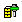

12. Tool database
Please note that the demo data in the tool database is provided to illustrate the functionality of the system only and is not for production purposes. OPEN MIND disclaims any liability for damages resulting from the use of demo data in a production environment.
12.1. Database formats
As the MS Access ( .mdb) format does not support 64-bit technology, it has been changed to SQLite ( .db) with Version 2011. Please note that SQLite tool databases cannot be protected by passwords at this time.
SQLite tool databases cannot be accessed by several users at the same time. This is only possible using SQL Server technology, which is supported as of Version 2014.1.
Warning
Microsoft ODBC Driver for SQL XX.X
If you are using SQL Server databases, ensure that you are also using an up- to-date driver. The name of the driver must read: Microsoft ODBC Driver for SQL XX.X.
Do not use drivers with the name SQL Server. This driver cannot transfer more than 400 kB of data to the server. As a result, you cannot use it to store 3D tools in your database.
12.2. Convert older database to the new format
In order to use a database created under Version 2010 and older, you must convert it to the current format. To convert an older database to the current format:
-
First, start your 2010 tool database from the Start menu under → → → .
-
Open the database that you want to convert to the new format, select it in the browser and select the → function from the shortcut menu by right-clicking. Your old database will be saved in a Neutral tool exchange format that can then be imported with the tool database.
-
Now start your current tool database from the Start menu under → → → .
-
Create a new (empty) database ( → ) and under File type select the format Sqlite database (.db).
-
In the browser, select the newly created database and then right-click to select the Import function in the shortcut menu.
-
Then select the previously created file in the
.xmlformat that you wish to convert to the new format.
The Import status dialog informs you about the current status of the data import.
Invalid lengths or duplicate designations are indicated in the Constraint Violation dialog and must be edited. Constraint violations can be resolved by different methods:
Automatic: All conflicts occurring during the import will be resolved automatically, so that all elements can be imported from the old to the new database.
Ignore: Should only be used by experienced experts.
Warning
The import continues even if there is no conflict solution. Since the application of this option may result in faulty tools, it is only available if the options Leave, Overwrite and OK are disabled.
The Leave/Leave All: The current element/all elements of the old database is/are preserved.
Overwrite/Overwrite All: The current element/all elements of the old database is/are overwritten with the new element(s).
Deviation: The difference between the element of the old database and the element to be imported is shown.
Note
Database files in the *.mdb format will not be deleted after import to the current database format but saved to your system in the same location under the name [ Datenbank_saved.mdb].
During the import, the tool heads defined in older versions are converted to tool spindles. Consequently, all references are retained. However, the converted tool spindles are no longer displayed in the OPEN MIND tool database. You can nevertheless use them when assembling a tool in hyperMILL.
A database conversion is performed when importing tool data from an older version into the current format. This operation should not be stopped, as otherwise hyperMILL will not be able to load any data and joblists and jobs will no longer be available.
12.3. Starting the OPEN MIND tool database
Start as a separate application:
 Via the Windows Start menu: → → → →
Via the Windows Start menu: → → → →
Start from hyperMILL: Click the icon in the hyperMILL browser, on the Jobs tab.